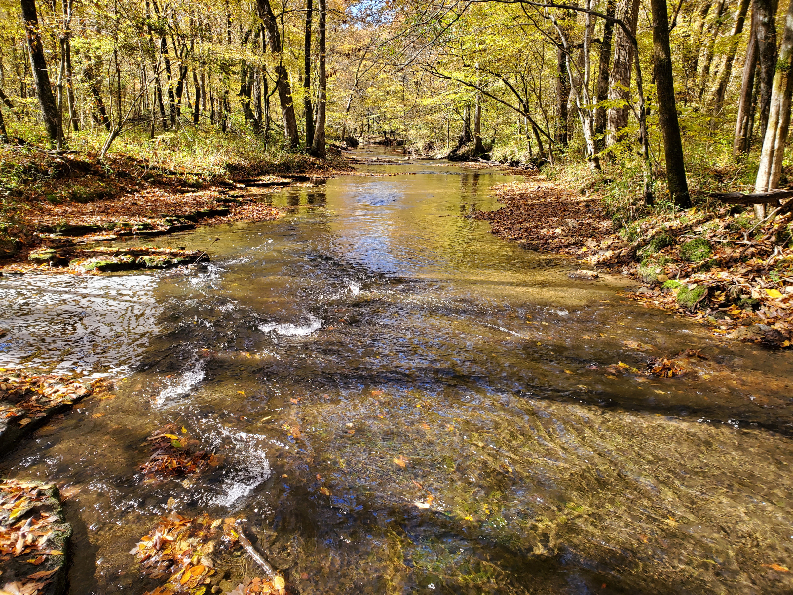

Acacia Academy of Music
About Us
Acacia Academy is a family-owned and operated music school located in beautiful Rogersville, Alabama. We offer private lessons to students of all ages. Our goal is to develop the musical capabilities of each and every student, enabling them to become the best musicians that they can be. Each lesson is tailored to fit the individual needs and interests of the student. We seek to establish a strong technical and musical foundation to enable our students to progress rapidly and confidently. Above all, we seek to nurture our students' love and appreciation for music!
Currently, we only offer lessons in piano, but we are actively working towards expanding our offerings.
Contact us to find out more about pricing or to schedule a consultation!
Meet Our Instructor
Morgan Nogradi
Hi! I am a pianist and piano instructor. I have studied this wonderful instrument since I was eight years old. Over the years, I have been exposed to many different piano methods (Alfred and Suzuki, to name a couple) and have experience performing a wide variety of genres. Currently, I am studying advanced classical piano with a retired European conservatory professor, along with pursuing further Music Theory certifications and composing.
I hold certifications in Piano Performance and Music Theory from the Associated Board of the Royal Schools of Music (ABRSM). To date, I have achieved the Grade 8 level in Piano Performance and the Grade 6 level in Music Theory, and am actively working towards the next levels in both subjects. Onward and upward!
I teach piano (both classical and non-classical), as well as Music Theory. Thanks to my afore-mentioned exposure to several methods, I am comfortable teaching different ones. I generally choose which I use with a given student based on the merits (and demerits!) of a given method combined with the student's personal goals and interests. My students also have the option to take exams from various examination boards and participate in various competitions if they wish, though there is no pressure to do so.
I love teaching and am committed to seeing my students develop and grow as musicians!